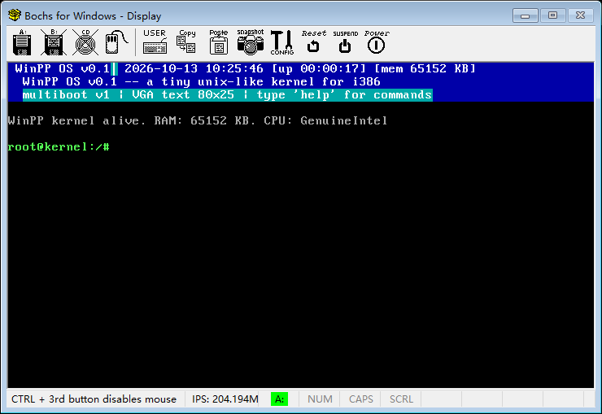
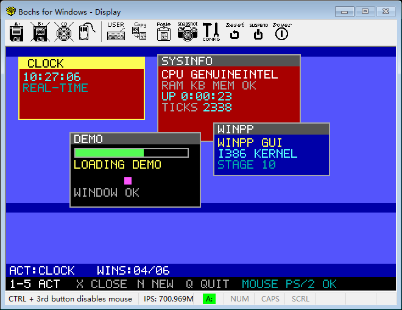
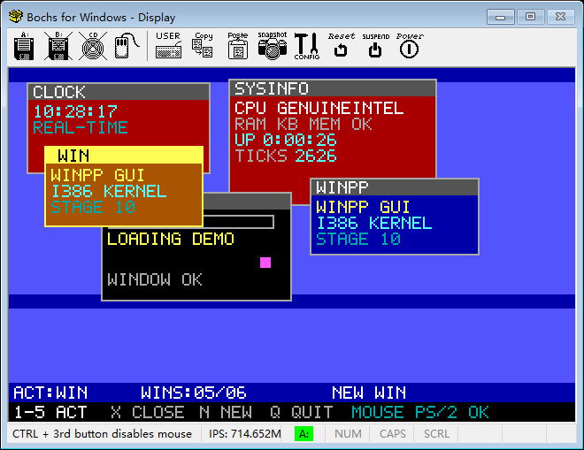
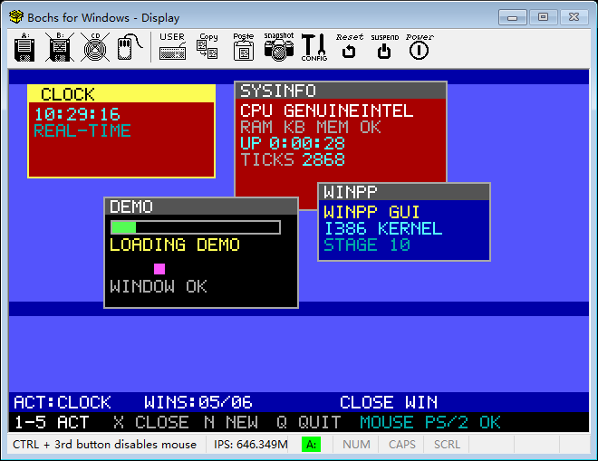
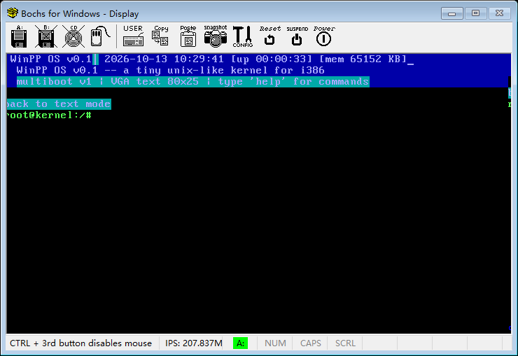
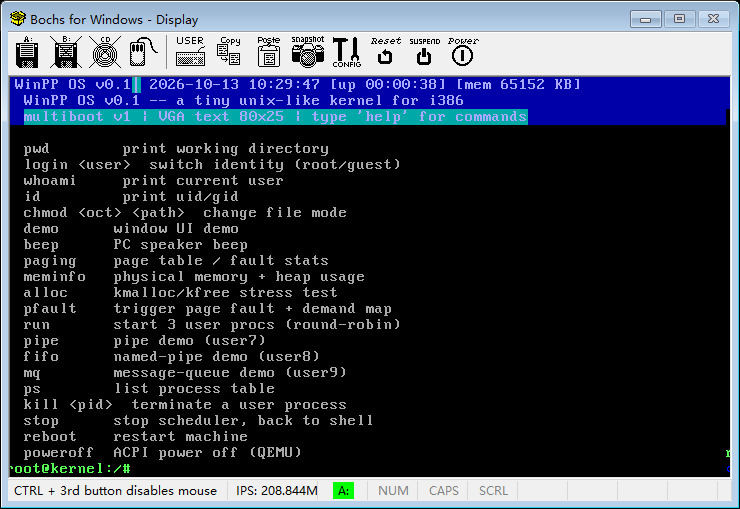

一句话意义：内核第一次画图了——VGA Mode13h 图形模式（320x200×256 色）、直接写 帧缓冲 像素、内置 5x7 点阵字体 画文字，再在上面跑一个窗口管理器（最多 6 个窗口：时钟/系统信息/动画/Logo），键盘 1-5 / n / x / q 操作窗口，PS/2 鼠标驱动（IRQ12）就位。全部 Bochs 实机 + 串口双通道验证通过，0 页错误。
| 输入 | 作用 |
|---|---|
| gui | 进入图形模式（Mode13h）+ 启动窗口管理器（默认 4 个窗口） |
| q | GUI 内退出：切回 80x25 文本模式，回到 shell |
| 1 - 5 | GUI 内激活对应编号窗口（1=CLOCK 2=SYSINFO 3=DEMO 4=WINPP ...） |
| n | GUI 内新建一个 WIN 窗口（最多 6 个） |
| x | GUI 内关闭当前激活窗口 |
[gui] cmd gui [gui] enter graphics mode (13h 320x200) [gui] text state saved: misc=67 SR1=0 SR4=2 CR08=0 CR13=28 AC10=c # 记住 BIOS 的文本模式寄存器组 [gui] font saved 8KB sum=c8dbddd1 # 8KB 文本字体已存（回读 mismatch=0） [gui] vga verify SR4=e GC6=5 CR08=0 CR13=28 # Mode13h 寄存器组回读（CR08=0 无像素平移） [gui] windows created: 4 # CLOCK / SYSINFO / DEMO / WINPP
[gui] key '1' → [gui] activate win 0 (CLOCK) # 数字键激活窗口 [gui] key 'n' → [gui] new win id=4 # n 新建第 5 个窗口 [gui] key 'x' → [gui] close win 4 (WIN) # x 关闭新建的窗口 [gui] key 'q' → [gui] exit to text mode # q 退回文本 shell
[gui] text state restored: SR4=2 GC6=e CR08=0 CR13=28
[gui] font restored sum=c8dbddd1 # 与 saved 完全相同（mismatch=0）
[gui] exit to text mode
bochs.log 中 "CRTC: ... panning ... not ..." 计数 = 0 # 旧版这里是两条不支持告警 + 画面冻结 bochs.log 中 WINGUI dimension update x=640 y=400 bpp=8 # 320x200 二倍缩放，几何正确 serial.out 中 [pfdbg]（页错误）计数 = 0






mouse.c 用 outb(0x64, 0x60) 想"把下一字节发给鼠标"，但 0x60 是写输出端口命令——0xF4（bit1=0）被写到 8042 输出端口，把 A20 关闭，内核访问 >1MB 内存全部错乱，表现为键盘注入全部失效。修复：改成 0xD4（下一字节发给辅助设备/鼠标）。禁用鼠标对照实验实锤：无鼠标版键盘立即恢复。
第一版只映射 0xA0000 一页，GUI 写满 64KB 帧缓冲（320x200=64000 字节）立刻在 0xA1000 触发 #PF。修复：整段映射 16 页（0xA0000-0xAFFFF）。修复后 0 页错误，深蓝桌面正常绘制。
GUI 主循环 if (!c) c = serial_getc(); if (c) ...，串口无数据时返回 -1（非 0）被当真按键，每 tick 刷一条 [gui] key 'ÿ'。修复：空返回 0（与 keyboard_poll 语义一致）。修复后日志干净。
自检只回读了 SR4 / GC6 / CR14 —— 这三个寄存器恰好是代码里单独写过的那三个，当然读得回来；而真正决定画面是否刷新的 CRTC 时序/平移位与属性控制器从未被检查。串口日志只能证明"内核以为自己在画"，证明不了"屏幕上有东西"。当时的所谓 GUI 截图，实际内容是冻结的文本画面或竖条纹垃圾。
原表把 CR08 写成 0x28（bit5-6 恰好打开"垂直像素平移"）、CR0C/0D 起始地址写成 0x0028、CR13 偏移写成 0x40，且 0x3C0 属性控制器与 0x3C8/0x3C9 调色板从未写过。后果：Bochs 直接报 CRTC: vertical pel panning not supported / byte panning not implemented，窗口几何被算成 640x271，画面完全不刷新。修复：改用 VGA BIOS 官方模式表（vgabios vgatables.h）的 Mode13h 寄存器组（CR08=0x00、CR13=0x28、SR4=0x0E…），并补上属性控制器 21 个寄存器 + 16 色 DAC 编程。修复后 Bochs 平移告警 0 条、几何 640x400。
Mode13h 的 64KB 线性帧缓冲在 chain4 下会写穿 plane 0-3 各 16KB，而 plane 2 偏移 0-8K 正是文本模式用的 8x16 字体。VGA BIOS 每次切模式都会重装字体，内核自己切模式却没人装，于是回文本模式后每个字符都用坏掉的字体点阵渲染 → 竖条纹。修复：进图形模式前保存整套文本寄存器组（Misc/Sequencer/CRTC/GC/AC/DAC）+ 8KB 字体，退出时原样写回（不再硬编码回归表）。
附带踩到的一个坑：存取字体必须用经典配方 SR2=0x04（只选 plane 2）/ SR4=0x06 / GC4=0x02 / GC5=0x00 / GC6=0x00（A0000 窗口）；若沿用文本模式的 GC6=0x0E，字母数字模式会把奇/偶地址自动分流到 plane 0/1，写 plane 2 会丢掉一半字节——表现正是"字形回来了但被竖条纹贯穿"。最终以 8KB 字体校验和验证：saved = restored = c8dbddd1，mismatch=0。
字体在 0xB8000-0xB9FFF，而分页只映射了 0xB8000 一页，保存字体时读到 0xB9000 立刻 #PF，内核当场挂死（串口留下 [pfdbg] cr2=b9000）。修复：整段映射文本窗口 0xB8000-0xBFFFF（8 页）；#PF 演示仍用地址 0，不受影响。
退出图形模式后内容本来就相同（都还是空格）的格子不会重绘，于是残留图形模式的像素。修复：退出时先用可见字符铺满整屏强制全部变化一次，再清屏重绘。实机 CRT 持续扫描显存，本无此问题。
1) winpp-os/shots/ 里有 56 个 "*.png" 其实是 BMP 改了扩展名（文件头 42 4D），已全部转成真 PNG；另有 3 个文件本身是坏的/截断的 BMP（17-run-ok.png、_s10-ps7.png、_s10-console.png）保留原样。
2) 报告原先引用的 assets/s10-01-shell.png 与 s10-02-gui-desktop.png 内容与标签对不上（后者其实是花屏画面），已替换为本轮真实截图。
3) 本轮新增 6 张真 PNG 证据：assets/s10-11…s10-16。